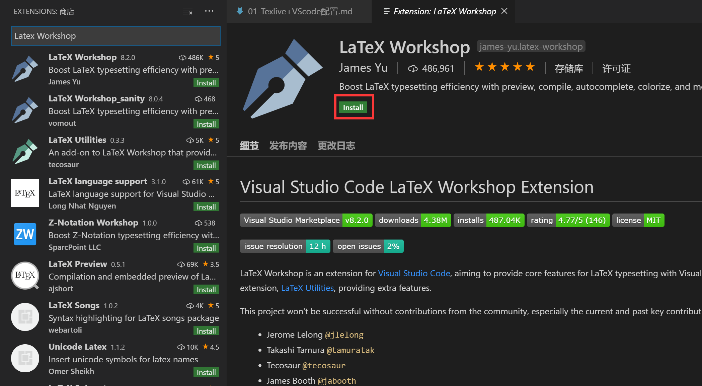
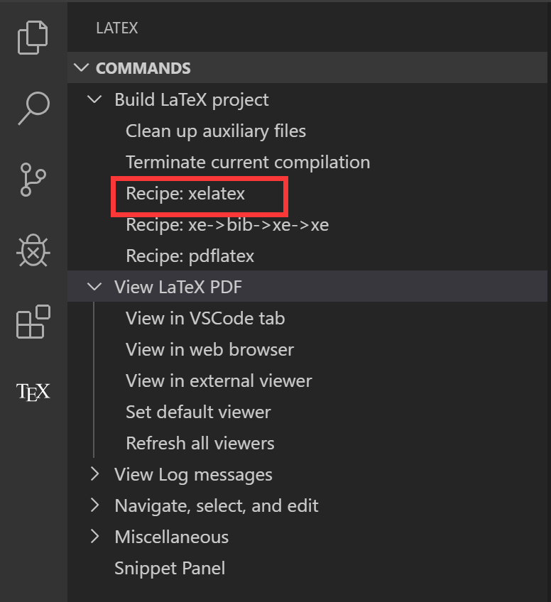
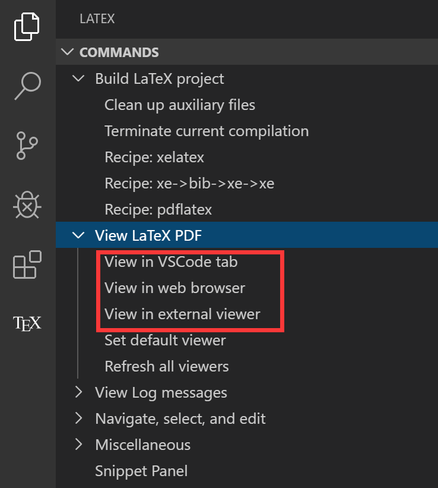

Texlive+VScode配置
VSCode写代码太方便，高亮文本很舒服，比以前用的CTeX舒服，CTeX毕竟太老了，然后就换成Texlive了
TEX Live是由国际TEX用户组（TEX Users Group，TUG）整理和发布的TEX软件发行套装，包含与TEX系统相关的各种程序、编辑与查看工具、常用宏包及文档、常用字体及多国语言支持。TEX Live是许多Linux/Unix系统默认或推荐的TEX套装，同时也支持包括Windows和Mac OS X等在内的其它操作系统。TEX Live是开发状态最为活跃的TEX发行版之一，保持着每年一版的更新频率。是免费软件。$^1$
关于CTeX
CTeX 套装
CTeX 套装是科学院吴凌云研究员的个人作品。在 CTeX 套装刚刚问世之时，因其解决了繁琐的中文字体安装工作，所以广受欢迎。但是，一方面 CTeX 套装已经很久不更新，内里的宏包、工具陈旧；另一方面，随着 XeLaTeX 的发展，以及 xeCJK 等技术的成熟，上述这些繁琐的工作已经没有必要而失去意义；因此，现在不推荐使用 CTeX 套装。
不要安装和使用 CTeX 套装！
CTeX 宏集
虽然它的名字也是「CTeX」，但是 CTeX 宏集和 CTeX 套装是两个不同的东西。CTeX 宏集是集成了中文支持、操作系统判定、字体选择、版式预设为一体的一组宏包和文档类的合集。我们推荐在任何情况下，优先使用 CTeX 宏集处理中文。
请在任何情况下优先使用 CTeX 宏集在 LaTeX 中处理中文！
搭建步骤
1.安装TeX Live和VSCode
你可以从官方站点下载它们的安装包然后安装，点击TeX Live下载链接，将会「自动选择」距离你最近的镜像下载。下载的同时安装VScode，安装都没有什么特定配置，直接默认安装就好。
2.VSCode配置
VSCode 安装完成之后，在扩展商店(打开Ctrl+Shift+X或者点击安装 LaTeX Workshop 插件。

3.编译Tex文件
新建文件夹，如latex学习，新建一个.tex文本，输入以下代码，
\documentclass[UTF8,a6paper]{ctexart}
\usepackage{graphicx}
\usepackage{float}
\usepackage{amsmath}
\usepackage{cite}
\usepackage{geometry}
\geometry{a6paper,centering,scale=0.8}
\usepackage{caption}
\usepackage[nottoc]{tocbibind}
\newtheorem{thm}{定理}
\title{\heiti 杂谈勾股定理}
\author{\kaishu 张三}
\date{\today}
\begin{document}
\maketitle
\begin{abstract}
这是一篇关于勾股定理的小短文。
\end{abstract}
\tableofcontents
\section{勾股定理在古代}
\label{sec:ancient}
西方称勾股定理为毕达哥拉斯定理，将勾股定理的发现归功于公元前6世纪的毕达哥拉斯学派\cite{Kline}。该学派得到一个法则，可以求出可以排成直角三角形三边的三元数组。毕达哥拉斯学派没有书面著作，该定理的严格表述和证明则见于欧几里德\footnote{欧几里德，约公元前330-275年}《几何原本》的命题47：“直角三角形斜边上的正方形等于两只脚边上的两个正方形之和。”正面是用面积做的。\par
我国《周髀算经》载商高（约公元前12世纪）答周公问：
\begin{quote}
\zihao{-5}\kaishu 勾广三，股修四，径隅五。
\end{quote}
又载陈子（约公元前7-6世纪）答荣方问：
\begin{quote}
\zihao{-5}\kaishu 若求邪至日者，以日下为勾，日高为股，勾股各自乘，并而开方除之，得邪至日。
\end{quote}
都较古希腊更早。后者已经明确道出勾股定理的一般形式。图\ref{fig:gougudingli}是我国古代对勾股定理的一种证明\cite{quanjing}。
\section{勾股定理的现代形式}
勾股定理可以用现代语言表述如下：
\begin{thm}[勾股定理]
直角三角形斜边的平方等于两腰的平方和。\par
可以用符号语言表述为：设直角三角形ABC,其中\angle C=$90^\circ$,则有
\begin{equation}\label{eq:gougu}
AB^2=BC^2+AC^2
\end{equation}
\end{thm}
满足式\eqref{eq:gougu}的整数称为\emph{勾股数}。第\ref{sec:ancient}节所说毕达哥拉斯学派得到的三元数组就是勾股数。下表列出了一些较小的勾股数：
\begin{table}[H]
\begin{tabular}{|rrr|}
\hline
直角边$a$ & 直角边$b$ & 直角边$c$\\
\hline
3&4&5\\
5&12&13\\\hline
\end{tabular}
\qquad
($a^2+b^2=c^2$)
\end{table}
\nocite{Shiye}
\bibliography{math}
\end{document}然后Ctrl+Alt+X或者点击打开LaTeX面板编译

编译成功会会出现很多文件，其中包括.pdf文件，可以用以下方式方便浏览
